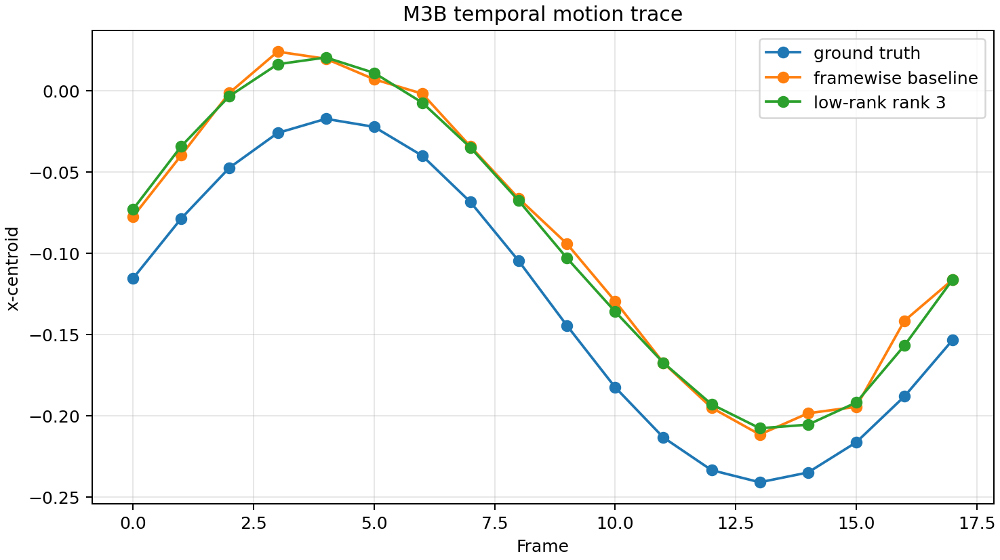
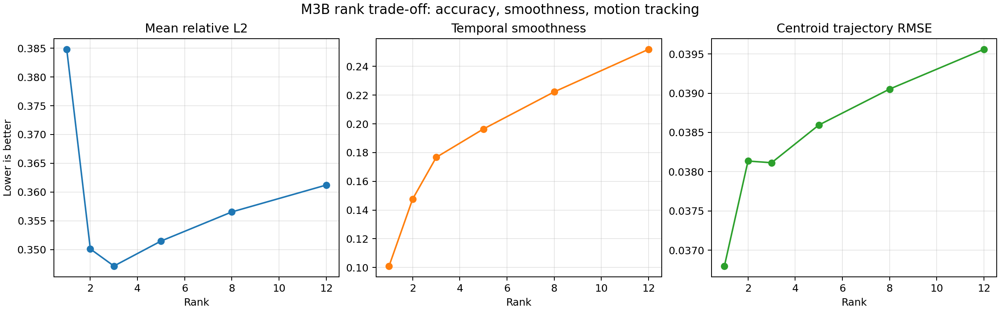

正式论文
DOI 10.1145/3809488；ACM TOG 45(5), 1-19。正式引用用 DOI/ACM 入口。
正式元数据已核He 主线
把何远哲 2026 ACM TOG 主线从“完整复现一篇很大的论文”收缩成本科真正能交付的子问题：低秩时序先验、可观测 rank 选择、数据接口、时序评价和 forward-model 偏差。页面同时连接本地 M3B 单次结果、8 种子六轴筛查、80 环境交叉实验，以及 864 观测格的跨形态无真值 selector，明确哪些改善可信、哪些结论还不能下。
4D BOST 很贴何远哲，但不宜作为本科第一阶段的整篇复现任务。当前最有价值的做法是保留 NeRIF / BOST 鲁棒性为主线，把 4D BOST 降成一个可验证子题：在统一 synthetic 3D+T phantom 和观测模型下，测清 rank、噪声、帧数、视角与系统偏差的作用；师兄确认真实数据和代码边界后，再决定是否接组内实现。
DOI 10.1145/3809488；ACM TOG 45(5), 1-19。正式引用用 DOI/ACM 入口。
Hyz617/TDBOST 包含 configs、TDmodel、dataloader、render、projection 和 run loop 结构。
ACM 标注 Open access / CC BY 4.0；官方 eReader 已核可读 19 页、29.4 MB。原始 PDF 命令行仍受 Cloudflare/CDN 会话限制，故暂不缓存。
| 检查项 | 2026-07-10 官方 GitHub 取证 | 实际影响 | 本科安全处理 |
|---|---|---|---|
| 快照与体量 | main tree 3393ca7；59 个 blob，共 2,287,454 bytes；最新提交 2026-04-04；无 release。 | 这是小型研究快照，不是带版本发布和兼容性保证的软件包。 | 记录 commit；只抽接口与实验变量。 |
| 许可 | GitHub API license: null，根目录无 LICENSE；README 的 “fully open-source” 不是许可证。 | 公开可访问不等于允许复制、修改或再发布代码和数据。 | clean-room 自写；需要代码级复用时先问何远哲/作者。 |
| 平台绑定 | run.py 在 CUDA 可用时硬编码 cuda:3；仓库带 1,065,192-byte 的 Linux x86-64 proj...so。 | 单卡机器可能报 invalid device ordinal；Mac/Windows 不能直接加载该投影扩展。 | 第一阶段不用扩展；自写小型投影 sanity model。NVIDIA 环境由师兄给版本。 |
| 本机绝对路径 | All_util/trainer.py 在 import 阶段读取 /home/PUBLIC_USER_REDACTED/Project/Data/.../jetflameinterpolated_data_10ms.mat，后部还有多处同类路径。 | 其他机器即使装完依赖，也会在训练前因缺少作者目录而失败。 | 不要原地修补无许可代码；把“外部数据必须参数化”写进自己的 loader 规范。 |
| 依赖清单 | pyDOE==0.3.8 与 0.9.8 同时出现；同时固定 contrib/full/headless 三套 OpenCV，并写有 skimage==0.0。 | pip install -r requirements.txt 不是可信的一键环境；可能出现版本冲突、包覆盖或安装失败。 | 不在主环境试装；先让师兄确认已知可用 lockfile / container。 |
| 默认规模 | 83³ -> 200³ voxel、20 time grids、density components 30/30/30、batch 2048、nSamples=1,000,000、n_iters=20,000；另有 30k/25k/10k 三阶段字段。 | 配置里存在多套 iteration 语义，且默认规模不是 Mac toy；运行前必须确认实际控制流和显存。 | 自己的 baseline 从 32³/64³、8-20 帧和显式预算开始。 |
| 样例 split | fuel train 为 180 个 9-view x 20-time 路径，fuel test 的 18 条路径全部与 train 重叠；spray 为 162 train + 18 test，路径不重叠。 | fuel test 不能被写成独立 held-out 泛化结果；不同 case 的 split 语义并不一致。 | manifest audit 先查 path overlap、view/time coverage，再定义 held-out。 |
新的 M3B 六轴实验页包含 448 条方法结果、8 个配对噪声种子、95% CI、rank/noise/frame/view/bias/dynamics 六轴判读和全部 CSV/JSON。默认 rank 3 的全局 L2 改善 3.90%、论文式 squared L2 改善 7.65%、时间一阶误差改善 44.68%、held-out deflection 改善 9.23%；但 mass trace 恶化 0.94%，无噪声场 L2 也恶化 0.56%。第一轮结论因此从“低秩有效”升级为“低秩只在有噪声、且评价目标允许平滑时有效”。
M3B 交叉实验页覆盖 rank×noise×views×dynamics 的 80 个环境、8 个配对种子、3,840 条方法记录和 3,200 组配对比较。逐格最优 rank 2/3/5/8 分别出现 27/20/24/9 次；rank 3 虽只在 20 格逐格最优，却以 0.79% mean regret、2.21% p95 regret 成为最稳固定默认值。它仍在 19/80 个环境产生 field 负收益，且 116/400 个环境×rank 单元出现 field 改善、mass trace 恶化。
M3B 跨形态 Selector 页覆盖 4 morphology × 3 dynamics × 4 noise × 3 views × 6 seeds，包含 864 个观测格、6,048 个 rank 候选和 full-rank 拒绝平滑。外层整类留出 phantom，测试时禁止使用 family、noise label、field truth 或 oracle rank。固定 rank 3 的 mean/p95 regret 为 1.561%/5.635%；组合可观测特征在无 held-out camera 时为 0.252%/1.267%，加入 held-out 后为 0.210%/1.054%。直接最小化 held-out residual 反而达到 2.423%/9.467%，说明 test-view consistency 不能单独代表 field quality。
当前公开仓库更适合回答“模块怎样组织、默认量级多大、哪里会出错”，不适合直接成为你的主代码。独立 M3B 已从单次 toy 走到六轴、交叉工作域和跨形态无真值 selector；下一步不应继续扩大 synthetic pooled mean，而应由师兄选择 leave-one-geometry-out、bias/sync/exposure blur、UQ/拒答或一小段真实数据 failure-signature 验证。
ACM 正式 HTML 全文已经核验：方法把折射率/密度流场组织成 X-Y-Z-T 四维对象，采用 MM matrix-matrix 分解的三组空间-时间 plane pairs，经轻量 MLP 解码为折射率差；forward model 同时计算光线偏折角与路径位移，并用独立 DC 网络迭代修正强折射下的非线性光路。
| 模块 | 正文可核参数 | 对本科实现的意义 |
|---|---|---|
| 四维表示 | MM 分解：XY-ZT、XZ-YT、YZ-XT；Hadamard product 后映射至 F 维特征。 | 真正该对照的是 MM/CP、R、F、memory 与 time，不是只写“用了低秩”。 |
| 折射率解码 | 3 个隐藏层、每层 128、Swish；频率编码层级 L=3；单标量输出折射率残差。 | 可做小型 3×64 / 3×128 clean-room decoder，但不能直接搬公开代码。 |
| Forward model | 随机分层 ray sampling；折射率梯度用中心差分；偏折角与路径位移双积分，后者可用 cumulative sum 并行。 | 直线 ray toy 必须标明降级；held-out reprojection 应使用同一物理定义。 |
| 观测与损失 | DeepFlow 从图像提取 u/v displacement；loss = displacement MSE + regularization + boundary condition。TV+L1 权重 1e-4，边界权重 1.0。 | 绝对折射率尺度依赖边界条件；只优化位移残差并不自动确定常数项。 |
| DC 网络 | 输入 ray origin、direction、time、depth；6 层×200、3 输出；Nc=6000 后启用，与主场模块交替两轮。 | 把 DC 单独做 ablation；不要把它和低秩 factor 的收益混在一起。 |
| 优化 | 数值实验 60³ coarse-to-fine，在 3k/6k iteration 上采样到 200³，约 10k 收敛；前向 FP32、反传 FP16。 | 本科先复制 coarse-to-fine 实验逻辑，不复制 200³ 训练规模。 |
Fuel Injection 与 Spray Combustion；9 个等角视角、每幅 200×200、50 mm 立方 VOI、Gaussian noise，并扫 G0 / 10G0 / 100G0。计算平台为 64-core Xeon、512 GB RAM、RTX 4090。
Photron AX100 mini + 九输入单输出 fiber bundle；1 kHz、100 μs、1024×1024。联合重建 500 帧，test-view 平均 PSNR 约 27 dB；20k iterations 用时 80 min，约 9.6 s/frame，10k 时约 4 s/frame。
| 强折射尺度 | NeRIF L2 / SSIM | Ours no DC L2 / SSIM | Ours full L2 / SSIM | 读法 |
|---|---|---|---|---|
G0 | 0.0032 / 0.9985 | 0.0032 / 0.9986 | 0.0018 / 0.9992 | 弱折射时各神经表示已很强，DC 增益较小。 |
10G0 | 0.0041 / 0.9977 | 0.0042 / 0.9975 | 0.0035 / 0.9983 | 中等折射开始看到完整 forward model 的收益。 |
100G0 | 0.0190 / 0.9632 | 0.0107 / 0.9866 | 0.0064 / 0.9948 | 强折射下 DC 是主增益来源之一，不能只归功于 tensor。 |
| 方法 / 配置 | 正文报告的 peak GPU memory | 本科判断 |
|---|---|---|
| Adjoint 200³ | 13.90 GB | 显式体素随分辨率立方增长。 |
| NeRIF, batch 2048 | 22.35 GB | 隐式网络不存体素，但反传 activation 很重。 |
| CP, mixed precision | 23.97 GB | 为达到质量需要更高 rank；不是“有张量就一定省”。 |
| MM hybrid, FP32 | 23.89 GB | 不使用 mixed precision 时优势并不明显。 |
| MM hybrid, mixed precision | 13.08 GB | 显存优势来自表示与精度策略共同作用。 |
论文 Eq. 24 的 “L2 error” 是平方范数比 ||error||² / ||GT||²；本地 M3B 的 mean_rel_l2 是逐帧非平方范数比 ||error|| / ||GT||。两者只能比较趋势，不能把 0.3471 与论文 Table 4 的 0.0018 放在同一数轴上。
| 项目 | 正式正文 | 公开仓库默认 | 需要确认 |
|---|---|---|---|
| Tensor components | 4.4 写 40/40/40；6.3.3 又写 R=30, F=20 是默认最佳折中。 | density_n_comp=[30,30,30]，density_dim=20。 | R=40 是特定主实验、旧配置还是文字差异？ |
| Decoder width | Appendix A：3 hidden layers × 128，Swish。 | density_n_layers=3，density_featureC=200。 | 公开 config 是否对应最终论文实验？ |
| Iterations | 数值实验约 10k；500-frame 实验用 20k，10k 已有可用结果。 | n_iters=20,000，另有 30k/25k/10k 三阶段字段。 | 哪些字段真正控制最终训练 loop？ |
| Evaluation split | 正文强调 test view 未参与重建。 | fuel test 的 18 个 file paths 全部与 train 重叠；spray 162/18 才 disjoint。 | fuel JSON 是可视化子集还是应视作 held-out？ |
低秩先验能压随机抖动，也可能抹掉真实瞬态；更重要的是，它通常不能修正相机几何、同步、位移估计或 ray model 带来的系统误差。rank 选择必须是多目标判断，而不是只找最平滑的曲线。



点击 rank，观察三个指标如何相互冲突。数值来自 2026-07-10 重跑的 rank_metrics.csv。
| 观察 | 可下的结论 | 不能下的结论 | 下一步验证 |
|---|---|---|---|
| L2 下降约 5.1% | 当前单次 synthetic 设置下，跨帧低秩约束有助于总体场误差。 | 不能说明 TDBOST 或真实 BOST 一定提升 5.1%。 | 多种子/多噪声/多视角已补；下一步换 phantom 族并接真实数据。 |
| 平滑度下降约 36.6% | 低秩处理显著抑制逐帧抖动。 | 更平滑不等于更符合真实动力学。 | fast/chirp/transient 已补；下一步测频率峰值、事件幅值与 sparse residual。 |
| 轨迹 RMSE 只改善约 5.1% | 时序去噪对运动追踪略有帮助。 | 不能声称系统偏差已解决；图上共同偏移仍很明显。 | bias 类型已筛查；下一步扫 bias magnitude、真实 calibration perturbation。 |
| rank 1 最平滑 | 强压缩能获得稳定曲线。 | 不能据此选 rank 1；它的 mean L2 反而最差。 | 用 Pareto front 或任务权重选择，不用单指标冠军。 |
| 公开结构 | 可学习 | 你的 clean-room 产物 | 边界 |
|---|---|---|---|
configs/config.py | rank、分辨率、学习率、路径集中管理。 | 自写 YAML/dataclass，保存 seed、views、frames、noise、bias 和 metrics。 | 不复制无 LICENSE 配置代码。 |
TDmodel/CPmodel.py / MMmodel.py | 不同低秩 factor 家族与公共模型接口。 | 先做 SVD/CP/Tucker 风格小 toy；报告 rank-error-time-memory。 | 不声称等价复现论文 plane-pair 网络。 |
dataloader/BOS_dataset.py | view/frame/deflection 的组织方式。 | 统一 manifest：case、view、frame、mask、calibration、deflection、units。 | 字段需由何远哲确认真实接口。 |
ray_utils.py / projection extension | forward model 是性能与系统误差核心。 | 清晰 Python/PyTorch sanity model + geometry perturbation tests。 | 不搬编译扩展，不把简化 parallel ray 当真实相机。 |
render/ / metrics | 固定评价和可视化接口。 | slice montage、rank scan、reprojection、trajectory、DMD/频率与失败案例报告。 | 这是最适合本科留下的组内工具。 |
| 交互项 | 当前状态 | 已经得到什么 | 下一步 |
|---|---|---|---|
| Rank × noise × views | 已完成 | 3 views 全部选 rank 2；高噪声偏向 rank 2-3；rank 3 是 regret 最低的固定默认值。 | 把 oracle rank 转成 held-out/奇异谱/物理 trace 的无真值 selector。 |
| Dynamics × rank | 已完成第一版 | rank 3 的 temporal-gradient 改善在 smooth/fast/chirp/transient 为 36.6%/19.9%/20.5%/33.9%。 | 补 frequency peak、event amplitude 与 low-rank+sparse residual。 |
| Frames × sampling rate | 未完成 | OFAT frame sweep 只固定完整运动周期，不能分离帧数、Δt 和曝光。 | 固定物理窗与固定 Δt 两组，加入 exposure blur。 |
| Bias magnitude | 未完成 | 已区分 geometry/sync/scale/flow drift 类型，但没有失效阈值。 | 扫描 geometry 0-4°、lag 0-2 frame、drift 0-2×。 |
| Synthetic → real | 等待数据 | 当前 8 seeds 是观测噪声，不是独立火焰工况。 | 接 10-20 frames、5-9 views 小样例，生成 data-health/temporal report。 |
把 4D BOST 定位成你的挑战线和组内对齐线，不要取代 NeRIF / BOST 鲁棒性底盘。现在已经不只是“有一个 toy”：六轴与交叉实验明确显示低秩收益随 noise/views/dynamics 改变，跨形态 selector 又证明 morphology 会把最优容量推到 full rank，并已把 oracle rank 转成测试时不看 field truth 的规则。下一步最有研究味的工作是做 geometry/真实数据迁移、UQ/拒答和系统偏差，而不是继续盲目扩大 synthetic 网络。
{kind=link}
{kind=link}